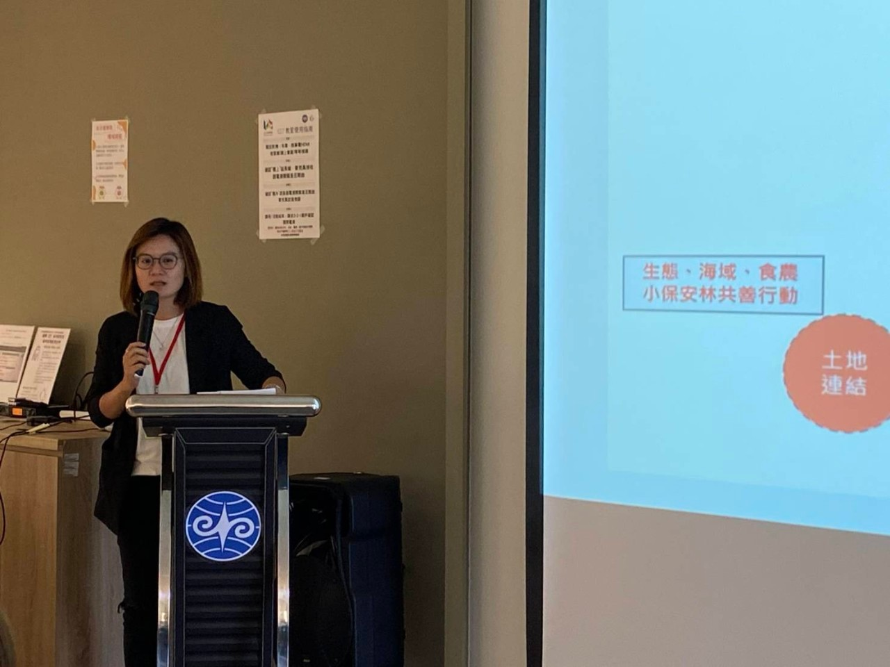
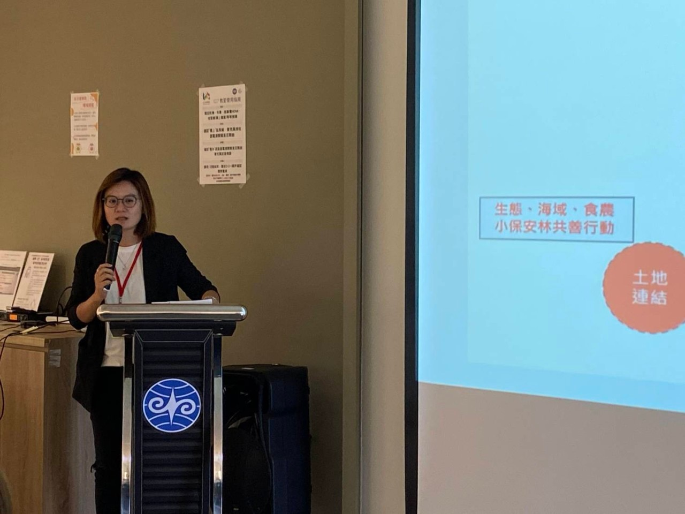

Yang, Chen-Yi. (2017). Taiwan's New Southbound Policy and Cultivation of Proficient Language Speakers of Southeast Asian Languages. Taiwan International Studies Quarterly, Vol. 13. No. 4, pp. 143-74.
Yang, Chen-Yi. (2017). A Study on the Current Situation and Role of the Language of New Immigrants' Children in Taiwan. Languages and International Studies, 17, pp. 127-74. doi:10.3966/181147172017060017005
Yang, Chen-Yi. (2017). A Retrospect of the Indigenous Languages Loss in Taiwan and Discussion on Revitalization of Languages. The 5th Young Scholars' Conference on Taiwan Languages, National Taichung University of Education, Taichung, Taiwan, October 13-14, 2017.
Yang, Chen-Yi. (2017). Indigenous Languages Loss in Taiwan: Language Proficiency, Use and Attitude. The First International Conference on Revitalization of Indigenous and Minoritized Languages, Barcelona, Spain.
Yang, Chen-Yi. (2017). The Literature Review and Discussion on Language Loss in Taiwan. The 16th Workshop of Multi-Disciplinary Study of Linguistics, Geography and History, National Taichung University of Education, Taichung, Taiwan, April 16, 2017.
Yang, Chen-Yi. (2016). The Role and Current Situation of New Immigrants' Languages in Taiwan. The 15th EWC International Graduate Student Conference, Hawaii, USA, February 11-13.
Yang, Chen-Yi. (2014). A Survey of Teenager's Language Proficiency, Use and Attitude. The 10th International Symposium on Taiwanese Languages and Teaching, National Cheng Kung University, Taiwan, October 25-26, 2014.
Yang, Chen-Yi. (2014). Indigenous Language Teaching and Learning: From New Immigrant Parents and Children's Viewpoint. The 10th International Symposium on Taiwanese Languages and Teaching, National Cheng Kung University, Taiwan, October 25-26, 2014.
Yang, Chen-Yi. (2014). A Study of Language Proficiency, Use and Attitude of Adolescents in Taiwan. The 13th EWC International Graduate Student Conference, Hawaii, USA, February 13-15.
Yang, Chen-Yi. (2012). A Study of the Language Proficiency, Use and Identification of Teenagers in Taiwan. The 2nd International Symposium on Chinese Language and Discourse, Nanyang Technological University, Singapore.
Yang, Chen-Yi. (2012). The Discourse Analysis of jiushi in Taiwan Mandarin. The 6th Conference on Language, Discourse, and Cognition, National Taiwan University, Taiwan, Taipei, Taiwan.
Yang, Chen-Yi. (2010). The Grammaticalizaiton of Bai in Mandarin Chinese: "do something but get nothing" vs. "do nothing but get something". The 43rd International Conference on Sino-Tibetan Languages and Linguistics, Lund University, Sweden.
Yang, Chen-Yi. (2010). Sociolinguistic Perspectives on Sound Variation of /f/ and /hw/ in Taiwan Mandarin. The 1st International Symposium on Chinese Language and Discourse, UCLA, Los Angeles, USA.
Yang, Chen-Yi. (2008). Sociolinguistic Variation of Mandarin Chinese /f/ and /hw/ in Taiwan. Paper presented at theNational Conference on Linguistics (NCL 2008), National Chiayi University, Taiwan, May 2-3, 2008.
Rau, D. Victoria, Hui-Huan Ann Chang, Yin-Sheng Tai, Chen-Yi Yang, Yi-Hui Lin, Chia-Chi Yang & Maa-Neu Dong. (2007). Teaching and learning an endangered language in Taiwan. Paper presented at the International Conference on Austronesian Endangered Language Documentation, Providence University, Taiwan, June 5-7, 2007. (NSC-95-2411-126-007)
專書篇章 Book Chapters
Rau, D. Victoria, Hui-Huan Ann Chang, Yin-Sheng Tai, Chen-Yi Yang, Yi-Hui Lin, Chia-Chi Yang & Maa-Neu Dong. (2008) Teaching and learning an endangered language in Taiwan, In Documenting and Revitalizing Austronesian Language. Eds. By D. Victoria Rau & Margaret Florey, special volume for Language Documentation and Conservation, University of Hawai'i. 162-188. http://nflrc.hawaii.edu/ldc/sp01/ (NSC-95-2411-126-007). ISBN 978-0-8248-3309-1
A Sociolinguistic Description of Language Change in Taiwan. Department of English Language, Literature and Linguistics. Providence University, Taichung, Taiwan. May 12, 2020.
A Survey of Junior High Students' Language Proficiency, Use and Attitude in Taiwan: Mandarin Chinese, Indigenous Languages and English. Linguistics Department Tuesday Seminar. University of Hawai'i at Mānoa, Hawai'i, USA, May 6, 2014.
Language is Not Only a Language. Department of English Language, Literature and Linguistics. Providence University, Taichung, Taiwan. October 2010.

 
